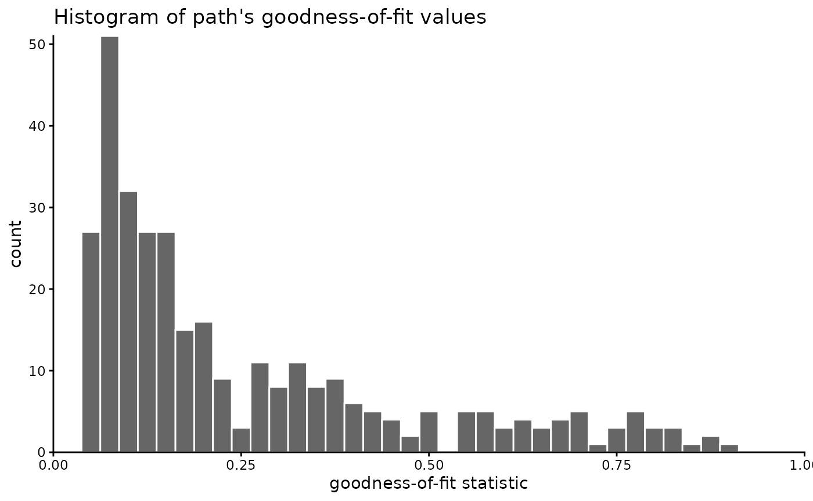
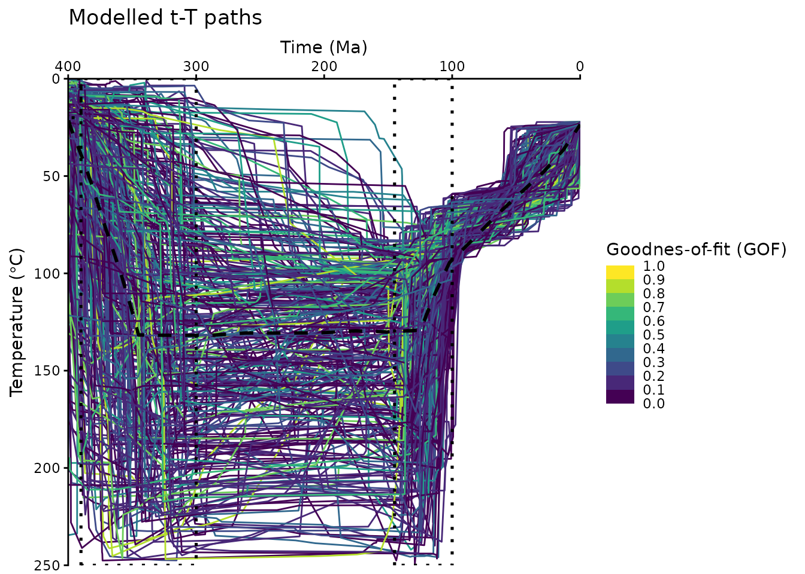
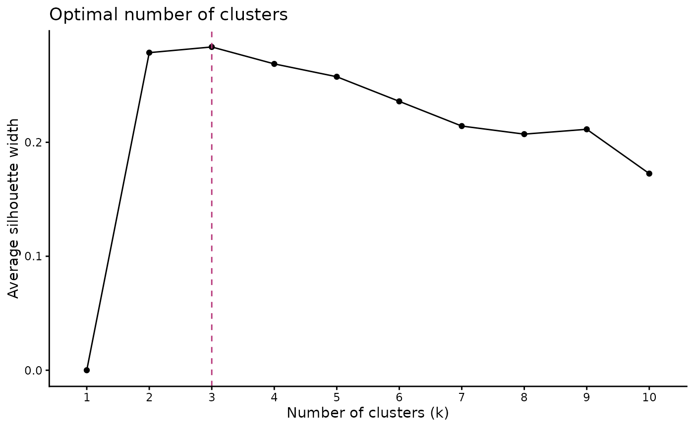
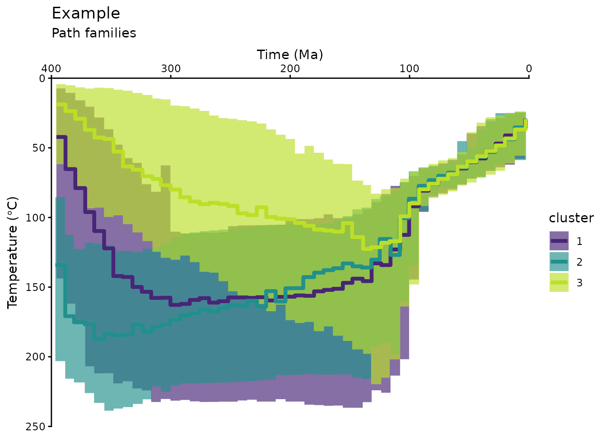
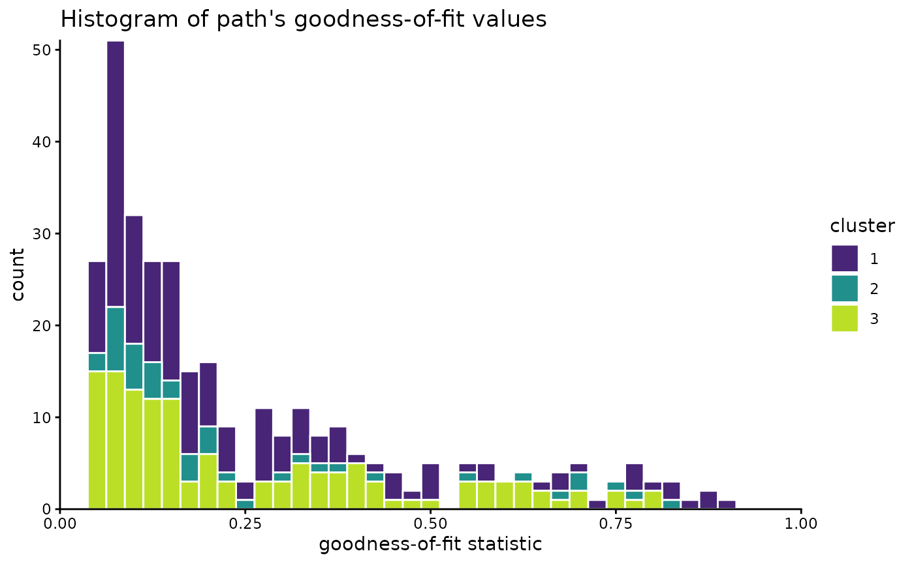
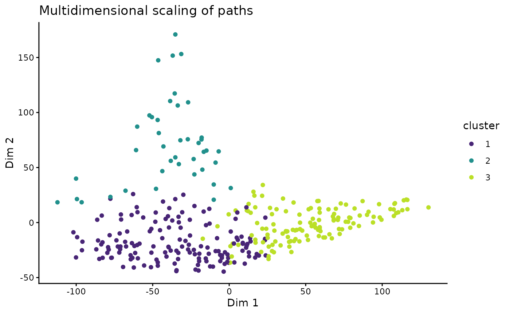
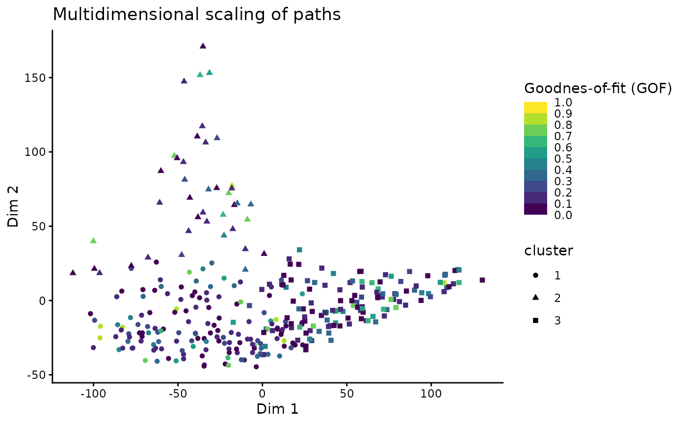
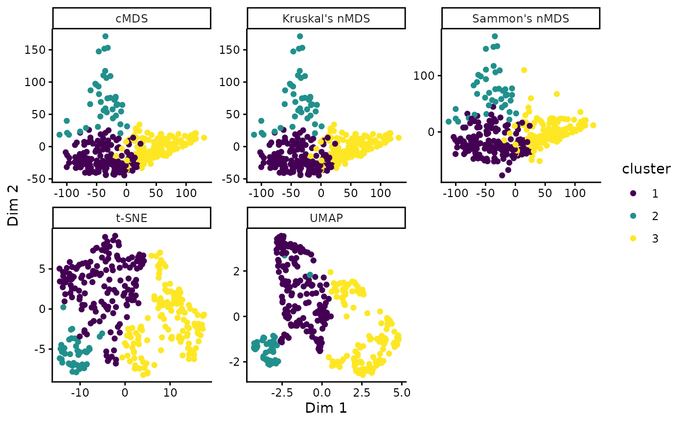

This document provides a brief working example to demonstrate how to cluster time-temperature paths from HeFTy inverse thermal history models.
Load some example data:
path2myfile <- system.file("112-73_30_H1_50-inv.txt", package = "thermoclustr")
tT_paths <- read_hefty(path2myfile)
# Extract the paths and reorder the paths by the GOF values:
paths <- tT_paths$paths |>
dplyr::arrange(Fit, Comp_GOF) |>
dplyr::mutate(segment = forcats::fct_reorder(segment, Comp_GOF))Extract the weighted mean path from the loaded objects, and build a constrain box from the min/max values given for the constraints (later used for plotting):
# Extract mean path:
mean_path <- tT_paths$weighted_mean_path
# Extract the constraints:
constraints <- tT_paths$constraints
# build a constraint box polygon:
constraint_box <- do.call(rbind, lapply(seq_along(constraints), function(i) {
data.frame(
x = c(constraints$max_time[i], constraints$max_time[i], constraints$min_time[i], constraints$min_time[i]),
y = c(constraints$max_temp[i], constraints$min_temp[i], constraints$min_temp[i], constraints$max_temp[i]),
group = constraints$constraint[i]
)
}))You can quickly inspect your Hefty output by calling individual list elements:
print(tT_paths$summary)
#> grain mean sd min max
#> 1 good AFT Lm (<b5>m) 11.91381 0.3385423 11.17598 12.61495
#> 2 good AFT age (Ma) 97.10919 3.3983183 91.25161 103.43879
#> 3 good 112-73-2a corr. age (Ma) 43.67936 4.2493954 34.68526 52.60130
#> 4 good 112-73-3a corr. age (Ma) 43.13571 4.3059370 33.98576 52.21119
#> 5 good 112-73-4a corr. age (Ma) 36.97330 6.0464201 25.28206 49.20111
#> 6 good 112-73-5a corr. age (Ma) 48.60404 3.8672977 39.50322 57.92818
#> 7 acc AFT Lm (<b5>m) 12.41629 0.5669847 10.71820 13.38772
#> 8 acc AFT age (Ma) 92.63882 7.0138344 82.44131 112.45117
#> 9 acc 112-73-2a corr. age (Ma) 49.17848 8.8319324 27.06320 63.77134
#> 10 acc 112-73-3a corr. age (Ma) 48.56021 8.8235832 26.76311 63.33728
#> 11 acc 112-73-4a corr. age (Ma) 42.07558 9.6831207 18.15850 60.46109
#> 12 acc 112-73-5a corr. age (Ma) 53.85368 8.4278438 29.71129 66.94035To analyze a subset of the data, you can filter the data using a time and temperature range. For example:
max_time <- 400
max_temperature <- 250
paths_filtered <- crop_paths(
tT_paths,
time = c(-Inf, max_time),
temperature = c(-Inf, max_temperature)
)You may also filter the data by a GOF threshold or range. Maybe first you may check how the GOF values are distributed:
# set `theme_classic()` as the default ggplot theme
theme_set(theme_classic())
paths_filtered$paths |>
dplyr::select(segment, Comp_GOF) |>
dplyr::distinct() |>
ggplot(aes(Comp_GOF)) +
geom_histogram(
color = "white", , fill = "grey40",
binwidth = .025
) +
coord_cartesian(xlim = c(0, 1), expand = FALSE, clip = "off") +
labs(
x = "goodness-of-fit statistic", title = "Histogram of path's goodness-of-fit values"
)
In our example, we will not filter the GOF values, because we hope the clustering may identify “hidden” path families that might go undetected if we filter the data too much. If you still want to filter the paths, you could do it likes this:
Now we visualize the filtered t-T paths:
ggplot(paths_filtered$paths, aes(time, temperature, group = segment, color = Comp_GOF)) +
geom_path() +
labs(
title = "Modelled t-T paths",
x = "Time (Ma)",
y = bquote("Temperature (" * degree * "C)")
) +
geom_path(
data = mean_path, aes(time, temperature),
color = "black", linewidth = 1, linetype = "dashed", inherit.aes = FALSE
) +
geom_polygon(
data = constraint_box, aes(x, y, group = group),
fill = NA, color = "black", linetype = "dotted", lwd = .9, inherit.aes = FALSE
) +
scale_color_viridis_b(
"Goodnes-of-fit (GOF)",
limits = c(0, 1),
breaks = seq(0, 1, .1),
oob = squish
) +
scale_x_reverse(position = "top") +
scale_y_reverse() +
coord_cartesian(expand = FALSE, ylim = c(max_temperature, 0), xlim = c(max_time, 0))
The above plot uses some minor modifications of a default
ggplot2::ggplot(), e.g. reverse the axes and colors etc. Feel free to edit these plots following your personal preferences. Check the ggplot user manual for more details: https://ggplot2.tidyverse.org/
Clustering
First, we calculate the dissimilarities between the paths using the Hausdorff distance:
tT_diss <- path_diss(paths_filtered, dist = "Hausdorff")An alternative measure for the dissimilarities is the Fréchet distance using
dist = 'Frechet'.
Is the data clustered?
Whether the data is actually clustered can be checked using the Hopkins statistic (H), i.e. the mean nearest neighbor distance in the random data set divided by the sum of the mean nearest neighbor distances in the real and across the simulated data set
How to interpret the Hopkins statistics? If data D were uniformly distributed, then the distances between the reals and the simulated data would be close to each other, and thus H would be about 0.5. However, if clusters are present in D, then the distances for artificial points would be substantially larger than for the real ones in expectation, and thus the value of H will increase (Han, Kamber, and Pei 2012).
A value for H higher than 0.75 indicates a clustering tendency at the 90% confidence level.
The null and the alternative hypotheses are defined as follow:
Null hypothesis: the data set D is uniformly distributed (i.e., no meaningful clusters)
Alternative hypothesis: the data set D is not uniformly distributed (i.e., contains meaningful clusters)
We can conduct the Hopkins Statistic test iteratively, using 0.5 as the threshold to reject the alternative hypothesis. That is, if H < 0.5, then it is unlikely that D has statistically significant clusters. Put in other words, If the value of Hopkins statistic is close to 1, then we can reject the null hypothesis and conclude that the dataset D is significantly a clusterable data.
tT_diss$hopkins
#> statistic p-value
#> 0.9898103 0.0000000The result shows that our data is likely clusterable.
How many clusters?
The optimal number of clusters can be estimated
using path_nbclust() and is based on the average
silhouette width:
path_nbclust(tT_diss)
#> $optimal
#> [1] 3
#>
#> $plot
The method recommends 3 clusters for the t-T paths.
Cluster the data
Finally we cluster the data using our estimate for the optimal number
of clusters. The clustering is done using cluster_paths(),
which returns a data.frame containing the path number and its assigned
cluster:
cluster_res <- paths_filtered |>
cluster_paths(k = 3, method = "hclust")
# print the first rows of the cluster result:
head(cluster_res)
#> segment cluster
#> 1 1 1
#> 2 10 2
#> 3 100 1
#> 4 101 2
#> 5 102 1
#> 6 103 1You can quickly check how many paths are assigned to each cluster:
count_cluster(cluster_res)
#> 1 2 3
#> 152 41 131In our example, the paths are almost equally distributed in two clusters.
We can now merge the cluster result with the original path data.frame:
path_families <- right_join(
cluster_res, paths_filtered$paths,
join_by(segment)
)We can calculate also some path statistics (e.g. median paths, 5% and 95% quantiles) for each cluster:
path_families_binned <- path_families |>
dplyr::group_by(cluster) |>
densify_cluster() |>
path_statistics()
head(path_families_binned)
#> # A tibble: 6 × 13
#> cluster bins time_min time_median time_max temp_mean temp_sd temp_IQR
#> <fct> <fct> <dbl> <dbl> <dbl> <dbl> <dbl> <dbl>
#> 1 1 (-0.4,8] 0 3.14 8.00 32.1 8.87 11.3
#> 2 1 (8,16] 8.00 11.9 16.0 38.6 10.8 16.4
#> 3 1 (16,24] 16.0 20.0 24.0 42.1 11.3 17.1
#> 4 1 (24,32] 24.0 27.9 32.0 46.4 10.8 15.6
#> 5 1 (32,40] 32.0 36.2 40.0 51.1 10.4 13.2
#> 6 1 (40,48] 40.0 43.8 48.0 56.4 10.2 12.2
#> # ℹ 5 more variables: temp_median <dbl>, temp_max <dbl>, temp_min <dbl>,
#> # temp_5 <dbl>, temp_95 <dbl>Plot the cluster of the modeled t-T paths:
ggplot(data = path_families_binned) +
geom_ribbon(
aes(x = time_median, ymin = temp_5, ymax = temp_95, group = cluster, fill = cluster),
stat = "stepribbon",
inherit.aes = FALSE,
alpha = .66
) +
geom_step(
aes(x = time_median, y = temp_median, color = cluster),
lwd = 1.5
) +
scale_color_viridis_d(aesthetics = c("fill", "color"),
begin = .1, end = .9) +
# Axes settings:
scale_y_reverse() +
scale_x_reverse(position = "top") +
# Labels:
labs(
title = "Example",
subtitle = "Path families",
x = "Time (Ma)",
y = bquote("Temperature (" * degree * "C)")
) +
# facet_wrap(vars(cluster)) + # uncomment if you want each cluster in a separate plot
coord_cartesian(expand = FALSE, ylim = c(max_temperature, 0), xlim = c(max_time, 0)) 
Have a final look on the distribution of the paths:
path_families |>
dplyr::select(segment, cluster, Comp_GOF) |>
dplyr::distinct() |>
ggplot(aes(Comp_GOF, fill = cluster)) +
geom_histogram(color = "white", binwidth = .025) +
scale_color_viridis_d(aesthetics = c("fill", "color"), begin = .1, end = .9) +
coord_cartesian(xlim = c(0, 1), expand = FALSE, clip = "off") +
labs(
x = "goodness-of-fit statistic", title = "Histogram of path's goodness-of-fit values"
)
Multidimensional Scaling
Another way to look at the path-dissimilarities is by transforming the Hausdorff distance matrix by multidimensional scaling (MDS). MDS reduces the dimensions of the original dataset, so that the paths will be plotted as points. Thereby, the plot “maps” the dissimilarities in a way so that similar paths plot as close points, and different paths will be far apart.
The path_diss() function already calculated the MDS
coordinates, which can now be plotted and colored by the cluster
results.
tT_diss_mds <- as.data.frame(tT_diss$mds) |>
bind_cols(cluster_res)
ggplot(tT_diss_mds, aes(V1, V2, color = cluster)) +
geom_point() +
scale_color_viridis_d(aesthetics = c("fill", "color"), begin = .1, end = .9) +
labs(title = "Multidimensional scaling of paths", x = "Dim 1", y = "Dim 2") 
> Note that MDS is a dimension-reducing transformation Thus, the 2D representation if only a modified projection of the true relationship of the data and thus can depict distortions and overlaps.This visualization offers to explore correlations between the path similarities (or clusters) and other properties of the paths, such as the goodness-of-fit values of the Hefty model:
# join the mds coordinates with the path properties
dplyr::left_join(
tT_diss_mds,
dplyr::distinct(dplyr::select(paths, segment, Comp_GOF)),
dplyr::join_by(segment)
) |>
ggplot(aes(V1, V2, color = Comp_GOF, shape = cluster)) +
geom_point() +
scale_color_viridis_b(
"Goodnes-of-fit (GOF)",
limits = c(0, 1),
breaks = seq(0, 1, .1),
oob = squish
) +
labs(title = "Multidimensional scaling of paths", x = "Dim 1", y = "Dim 2") 
By default, classical metric MDS is used. Alternatively, other methods such as Kruskal’s non-metric MDS, Sammon’s non-metric MDS, Uniform Manifold Approximation and Projection (UMAP), or t-distributed Stochastic Neighbor Embedding (t-SNE) can be used:
# Classical MDS
tT_cmds <- stats::cmdscale(tT_diss$diss)
tT_cmds_coords <- data.frame(tT_cmds) |>
dplyr::bind_cols(cluster_res) |>
dplyr::mutate(method = 'cMDS')
# Kruskal's non-metric MDS (nMDS)
tT_nmds <- MASS::isoMDS(tT_diss$diss)
#> initial value 24.573803
#> final value 24.573021
#> converged
tT_nmds_coords <- data.frame(tT_nmds$points) |>
dplyr::bind_cols(cluster_res) |>
dplyr::mutate(method = "Kruskal's nMDS")
# Sammon's nMDS
tT_sammon <- MASS::sammon(tT_diss$diss)
#> Initial stress : 0.10203
#> stress after 3 iters: 0.08971
tT_sammon_coords <- data.frame(tT_sammon$points) |>
dplyr::bind_cols(cluster_res) |>
dplyr::mutate(method = "Sammon's nMDS")
# t-distributed Stochastic Neighbor Embedding (t-SNE)
tT_tsne <- Rtsne::Rtsne(tT_diss$diss, is_distance = TRUE)
tT_tsne_coords <- data.frame(tT_tsne$Y) |>
dplyr::bind_cols(cluster_res) |>
dplyr::mutate(method = "t-SNE")
# Uniform Manifold Approximation and Projection (UMAP)
if(require(RcppHNSW)) library(RcppHNSW)
tT_umap <- uwot::umap2(tT_diss$diss)
tT_umap_coords <- data.frame(tT_umap) |>
dplyr::bind_cols(cluster_res) |>
dplyr::mutate(method = 'UMAP')
# Combine and plot:
dplyr::bind_rows(
tT_cmds_coords,
tT_nmds_coords,
tT_sammon_coords,
tT_tsne_coords,
tT_umap_coords
) |>
ggplot(aes(X1, X2, color = cluster)) +
geom_point() +
facet_wrap(vars(method), scales = 'free') +
scale_color_viridis_d() +
labs(x = "Dim 1", y = "Dim 2")